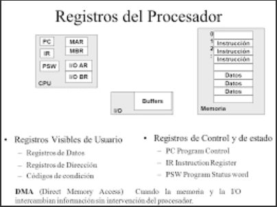
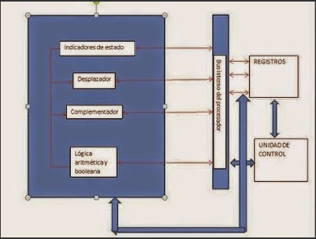

2.1 Organizacion del procesador.
La función principal de un procesador es ejecutar instrucciones y la organización que tiene viene condicionada por las tareas que debe realizar y por cómo debe hacerlo.
Los procesadores están diseñados y operan según una señal de sincronización. Esta señal, conocida como señal de reloj, es una señal en forma de onda cuadrada periódica con una determinada frecuencia. Todas las operaciones hechas por el procesador las gobierna esta señal de reloj: un ciclo de reloj determina la unidad básica de tiempo, es decir, la duración mínima de una operación del procesador.
Para ejecutar una instrucción, son necesarios uno o más ciclos de reloj, dependiendo del tipo de instrucción y de los operandos que tenga.
Las prestaciones del procesador no las determina solo la frecuencia de reloj, sino otras características del procesador, especialmente del diseño del juego de instrucciones y la capacidad que tiene para ejecutar simultáneamente múltiples instrucciones.

2.2 Estructura de registros.
Primero que nada
¿Que es un registro?
Un registro es una memoria que esta ubicada en el procesador y se encuentra en el nivel más alto en la jerarquía de memoria, por lo tanto tiene una alta velocidad pero con poca capacidad para almacenar datos que va desde los 4 bits hasta los 64 bits dependiendo del procesador que se utilice. Los datos que almacena son los que se usan frecuentemente.

Registros visibles para el usuario.
Son aquellos que pueden ser referenciado por medio del lenguaje maquina que ejecuta la CPU, los registro que normalmente disponibles son:
Registros de propósito general, son aquellos que pueden guardar tanto datos como direcciones.
Registro de datos, que pueden ser asignados por el programador a diversas funciones. En algunos casos son de propósito general y pueden ser empleados por cualquier instrucción de máquina que lleve a cabo operaciones sobre los datos.
Registros de direcciones, contienen direcciones en la memoria principal de datos y este tipo de registro puede ser de propósito general o estar a un modo específico de direccionamiento.
Códigos de condición, también conocidos como indicadores o flags. Los códigos de condición, son bits activados por el procesador como resultado de determinadas operaciones.
